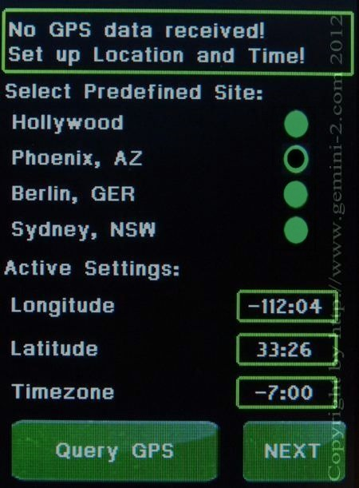

| Quick Start Tutorial - click on green button to Navigate |
|
Get Latitude, Longitude and Time Zone offset from your Address.  |
You have to enter your coordinates into the latitude and longitude, don't worry about the offset, we will do that on the next screen. If you select the different locations, you can see the sign change on the display. Notice that the Longitude is
Negative in the USA and Positive in Europe Touch in the Longitude box. When you do the Longitude entry screen will appear. Do what is indicated in that screen. After that you will be brought back to this screen. Touch in the Latitude box, You will be taken to a screen similar to the one you just filled out. After filling out that screen you will be brought back here again. Hit the Next button to be taken to then NEXT screen. Note: the Hemisphere is selected totally by the sign of the Latitude in the Gemini-2. Positive for Northern Hemisphere and negative for Southern Hemisphere. It was the same in the Gemini-1 also. No switches to change at all. The Query GPS button will have the Gemini-2 try and get the GPS coordinates from a GPS unit hooked to Serial Port 1. See GPS receiver link below. |
|
The speed of this ports
defaults to 4800 baud for GPS use. It's speed is set in the Web interface
under Serial Tab. Note: If you are using a GPS receiver. to get the time, then the offset does not matter. The Gemini-2 only uses UTC time for all it's calculations, and a GPS returns UTC time only. You can disregard the time screen when using a GPS receiver. You can have the hand controller show the correct local time by setting the TimeZone Correctly (include DST if active in your time zone.) If you set TimeZone to zero then the time shown will be UTC. |